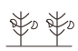

The wood between Teiglin and Sirion, its heart Amon Obel and Ephel Brandir; the Crossings of Teiglin its strategic door.a
Its governance
Not a kingship: the Haladin follow chosen chieftains (Haleth a woman first of them), and WotJ shows a full folk-moot — the Doom-ring of Brethil trying Húrin — the most detailed 'parliamentary' scene in the legendarium.b
Its people
A folk that 'remained a people apart, and were ever after known to Elves and Men as the People of Haleth'; with them the Drúedain dwell — the only recorded Edain–Drúadan cohabitation; woodland burial and the mound of Túrin their monuments.c
Whose hand
GENERATED — Ideogram V3, driven by a prompt written in this archive (map/run_artifacts.py posts to api.ideogram.ai). NO ILLUSTRATOR DREW IT and it must never be presented as though one had. Ruling 3 asks for the hand and this IS the hand: 'generated' is an answer where 'unknown' would not be.d
What the corpus says
“under the brief light of dawn; but beyond loomed a darkness, where the great forest of Brethil”e
“down into the Vale of Sirion they passed into the Forest of Brethil; and at last, weary and”f
a The archive's reading — [I-H]
b The archive's reading — [I-H]
c The archive's reading — [C]
d The ruling — the owner's ruling of 13 August 2026 on the generated images: 'we are free to use them'. That settles the LICENCE. It does not settle the HAND, which is recorded above as what it is — a permission to USE is not a permission to MISATTRIBUTE. [C]
e The text — Unfinished Tales of Numenor and Middle Earth · l.1307[C]
f The text — Unfinished Tales of Numenor and Middle Earth · l.2320[C]
☞AB·iTheA triskele boss — the archive's own hand
Volume I · Realmsccxviii
◌
The name stands in 900 cited lines, in 31 of the corpus's 192 texts — most often in The War of the Jewels (244), Unfinished Tales of Numenor and Middle Earth (105), The Children of Hurin (105).g
The drafts against the published text
379 cited lines stand in 8 volumes of the drafts and 309 in 5 of the published books — the record thinned as Tolkien revised.h

Two trees and the moons — the archive's own device, not a likeness
Nargothrond (29), The house of Tom Bombadil (13), Doriath (12), Dor-lómin (House of Hador) (7).j
A line the archive could not resolve
“brethel N. → brethil II ext., deep gorge ◇ S/386, WJ/100” — the name is near this line and the archive does not assert that it is this record.k
Named in the same lines
Haleth (43), Haldir (19), Túrin Turambar (19), Handir (18) — a shared line is a fact about the line, not a claim that the two met.l
counted from corpus lines that name BOTH records. A shared line is a fact about the line, not a claim that the two met; `eg` names a line a reader can open. [C]
By its name
Brethil is Noldorin.m
What was looked for and not found
a concordance headword bound to this route — searched over 937 headwords in site/arda_concordance.json, and nothing was found.n
g Counted — site/arda_apparatus.json[C]
h Counted — site/arda_apparatus.json[C]
i Counted — site/arda_apparatus.json[C]
j Counted — site/arda_apparatus.json[C]
k The line — Sindarin and Noldorin Dictionary · l.605[EXT]
l Counted — site/arda_apparatus.json[C]
m The lexicon — https://eldamo.org/content/words/word-1903177157.html[EXT]
n The search — site/arda_apparatus.json[C]
☞AB·ijCardolanSeven stars — the archive's own tailpiece
Not a kingship: the Haladin follow chosen chieftains (Haleth a woman first of them), and WotJ shows a full folk-moot — the Doom-ring of Brethil trying Húrin — the most detailed 'parliamentary' scene in the legendarium.